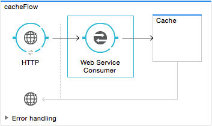
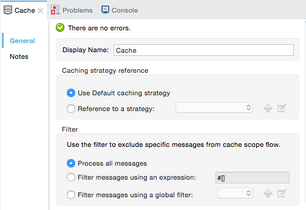
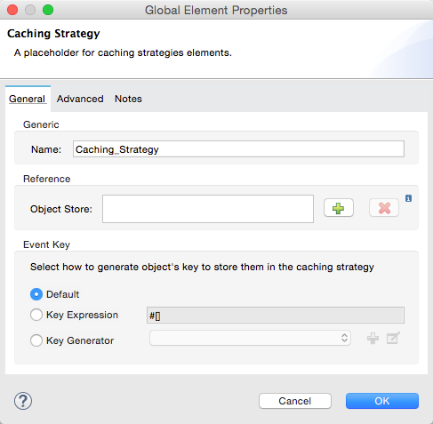
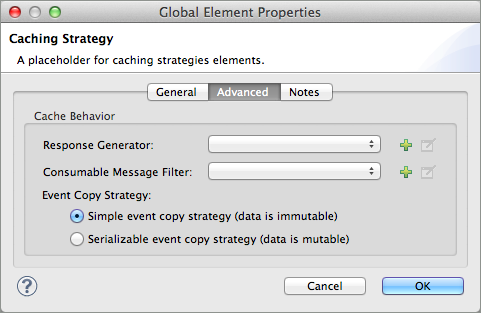
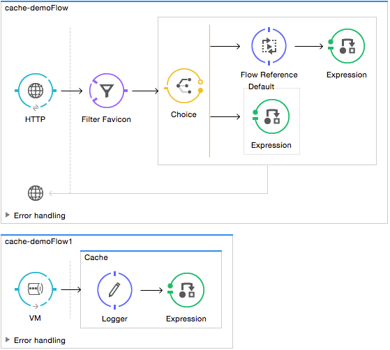

Cache Scope
The Cache Scope is a Mule feature for storing and reusing frequently called data. The Cache Scope saves on time and processing load.
Overview
You can put any number of message processors into a cache scope and configure the caching strategy to store the responses (which contain the payload of the response message) produced by the processing that occurs within the scope. Mule’s default caching strategy defines how data are stored and reused, but if you want to adjust cache behavior, you can customize a global caching strategy in Mule and make it available for use by all cache scopes in your application.
Mule sends a message into the cache scope and the parent flow expects an output. The cache scope processes the message, delivers the output to the parent flow and saves the output (that is, caches the response). The next time Mule sends the same kind of message into the cache scope, the cache scope may offer a cached response rather than invoking, again, a potentially time-consuming process.
| You can configure the exchange patterns of connectors in a cache scope to operate as request-response or one-way. Regardless of exchange pattern settings or any data retrieval activity that might occur within it, the cache scope simply caches the output of the flow inside it; when a message next enters the scope, the cache scope offers the cached output, or cached response. |
You can use a cache scope to reduce the processing load on the Mule instance and speed up message processing within a flow. It is particularly effective for:
-
Processing repeated requests for the same information.
-
Processing requests for information that involve large, non-consumable message payloads.
For instance, you can use a cache scope to manage customer requests for flight information. Many customers may request the same pricing information about flights from San Francisco to Buenos Aires. Rather than using a lot of processing power to send separate requests to several airline databases with each customer query, you can use a cache scope to arrange to send a request to the databases fewer times – say, once every ten minutes – and present users with the cached flight pricing information. Where timeliness of data is not critical, cache scope can save time and processing power.
Caching Strategy
The caching strategy defines the actions a cache scope takes when a message enters its sub flow.
-
If there is no cached response event (a cache “miss”), cache scope processes the message.
-
If there is a cached response event (a cache “hit”), cache scope offers the cached response event rather than processing the message.
You can customize a global caching strategy in Mule for the cache scopes in your application to follow, or you can use Mule’s default caching strategy.
Default Caching Strategy
By default, all cache scopes in Mule applications follow the caching strategy procedure described below.
| The default caching strategy uses an InMemoryObjectStore and should only be used for testing; on actual implementations, follow the instructions in Creating a Caching Strategy. |
-
A message enters the cache scope.
-
Cache scope determines whether the message’s payload is consumable. A consumable payload can only be read once before it is lost – such as a streaming payload – and cannot be cached.
-
If the message payload is consumable, cache scope always processes the message; nothing is cached and the caching strategy is abandoned.
-
If the message payload is not consumable, cache scope continues to the next step in the caching strategy.
-
-
Cache scope generates a key to identify the message’s payload. Mule uses an SHA256KeyGenerator and a SHA256 digest to generate a unique key for the message payload.
-
Cache scope compares the newly-generated key to cached responses that it has previously processed and saved in an InMemoryObjectStore — a container for cached data. In other words, cache scope searches for a “cache hit” it can offer instead of processing the message.
-
Where there is a cache miss, cache scope processes the new message and produces a response. Cache scope also saves the resulting response in the object store. (If the response has a consumable payload, it does not cache the response.)
-
Where there is a cache hit, the caching strategy uses a DefaultResponseGenerator to generate a response that combines data from both the new request and the cached response. (If the generated response has a consumable payload, it does not cache the response.)
-
-
Cache scope pushes the response out into the parent flow for continued processing.
Object Stores and Clustering
In Mule 3.4.1 and earlier versions, if you created a caching strategy without configuring an object store, Mule created a default InMemoryObjectStore which did not work as a unified cache for all cluster nodes. Instead, each node had its own cache; to create a unified cache for the cluster it was necessary to configure the application to use a custom managed store.
Starting in Mule 3.5.0, by default new caching strategies use an object store instance that provides a unified cache for all cluster nodes without extra modifications. The exception is the default caching strategy used by the Cache Scope, which uses the InMemoryObjectStore and is intended for testing only.
| Do not use TextFileObjectStore for a cache as the cache contains more than text content. For a list of all object store types, see the mule.util.store package summary. Mule provides the MuleObjectStoreManager, which creates object stores. |
If you want to enable the old behavior on your caching strategy (that is, provide a cache for each cluster node), you need to configure your application to use a managed store that controls an in-memory store. The configuration for the managed store should be:
-
maxEntries: 4000
-
entryTTL: -1
-
expirationInterval: 1000
For details on configuring caching strategies, see Creating a Caching Strategy.
Adding and Configuring a Cache Scope
Studio Visual Editor
-
Drag and drop the cache scope icon from the palette into a flow on your canvas.
 -
Drag one or more building blocks from the palette into the cache scope to build a chain of processors to which Mule applies the caching strategy. A cache scope can contain any number of message processors.
-
Open the building block’s Properties Editor, then configure the fields per the table below.

Field Descriptions
-
Display Name field - Value is
Cache- Customize to display a unique name for the scope in your application.Example:
doc:name="Cache" -
Caching strategy reference
-
Use Default caching strategy (Default) - Select if you want the cache scope to follow Mule’s Default Caching Strategy.
-
Reference to a strategy - Select to configure the cache scope to follow a global caching strategy that you have created; select the global caching strategy from the drop-down menu or create one by clicking the green plus sign.
Example:
cachingStrategy-ref="Caching_Strategy"
-
-
Filter field:
-
Process all messages (Default) - Select if you want the cache scope to execute the caching strategy for all messages that enter the scope.
-
Filter messages using an expression - Select if you want the cache scope to execute the caching strategy ONLY for messages that match the expression(s) defined in this field.
If the message matches the expression(s), Mule executes the caching strategy.
If the message does not match expression(s), Mule processes the message through all message processors within the cache scope; Mule never saves nor offers cached responses.
Example:
filterExpression="#[user.isPremium()]" -
Filter messages using a global filter - Select if you want the cache scope to execute the caching strategy only for messages that successfully pass through the designated global filter.
If the message passes through filter, Mule executes the caching strategy.
If the message fails to pass through filter, Mule processes the message through all message processors within the cache scope; Mule never saves nor offers cached responses.
Example:
filter-ref="MyGlobalFilter"
-
XML Editor or Standalone
-
Add an
ee:cacheelement to your flow at the point where you want to initiate a cache processing block. Refer to the code sample below. -
Optionally, configure the scope according to the tables below.
Element Description ee:cache
Use to create a block of message processors that process a message, deliver the output to the parent flow, and cache the response for reuse (according to the rules of the caching strategy.)
Field Descriptions
-
doc:name -
Cache- Customize to display a unique name for the cache scope in your application.Note: Attributes are not required in Mule Standalone configuration.
-
filterExpression - (Optional) Specify one or more expressions against which the cache scope should evaluate the message to determine whether the caching strategy should be executed.
-
filter-ref - (Optional) Specify the name of a filtering strategy that you have defined as a global element. This attribute is mutually exclusive with filterExpression.
-
cachingStrategy-ref - (Optional) Specify the name of the global caching strategy that you have defined as a global element. If no
cachingStrategy-refis defined, Mule uses the Default Caching Strategy.
Define Processing Within the Scope
Add nested elements beneath your ee:cache element to define what processing should occur within the scope. The cache scope can contain any number of message processors as well as references to child flows.
<ee:cache doc:name="Cache" filter-ref="Expression" cachingStrategy-ref="Caching_Strategy">
<some-nested-element/>
<some-other-nested-element/>
</ee:cache>Creating a Caching Strategy
Studio Visual Editor
The default caching strategy used by the cache scope uses an InMemoryObjectStore, and is only suitable for testing. For example, processing messages with large payloads may quickly exhaust memory storage and slow the processing performance of the flow. In such a case, you may wish to crate a global caching strategy that stores cached responses in a different type of object store and prevents memory exhaustion.
-
In the Cache properties editor, click the radio button next to the Reference to a strategy field, and click the green plus sign.
-
Configure the fields in the Global Element Properties panel that appears according to the tables below. The only required field is Name.

Field Descriptions
-
Name -
Caching_Strategy- Customize to create a unique name for your global caching strategy.Example:
name="Caching_Strategy" -
Object Store - (Optional) Configure an object store in which Mule stores all of the scope’s cached responses. Refer to the Configuring an Object Store for Cache section below for configuration specifics. Unless otherwise configured, Mule stores all cached responses in an InMemoryObjectStore by default.
Example:
<custom-object-store> <in-memory-store> <managed-store> <simple-text-file-store> -
Event Key:
-
Default - (Default) Mule utilizes an SHA256KeyGenerator and a SHA256 digest to generate a key. Use when you have objects that return the same SHA256 hashcode for instances that represent the same value, such as String class.
-
Key Expression - (Optional) Enter an expression that Mule should use to generate a key. Use when request classes do not return the same SHA256 hashcode for objects that represent the same value.
Example:
keyGenerationExpression="#[some.expression]" -
Key Generator - (Optional) Identify a custom-built Spring bean that generates a key. Use when request classes do not return the same SHA256 hashcode for objects that represent the same value. If you have not created any custom key generators, the Key Generator drop-down box is empty. Click the green plus sign next to the field to create one.
Example:
keyGenerator-ref="Bean"
-
Advanced Configuration
-
Optionally, click the Advanced tab in the Global Element Properties panel and configure further, if needed, according to the tables below.

Field Descriptions
-
Response Generator - Specify the name of a Response Generator that directs the cache strategy to use a custom-built Spring bean to generate a response that combines data from both the new request and the cached response. Click the green plus sign next to the field to create a new Spring bean for your caching strategy to reference.
Example:
responseGenerator-ref="Bean1" -
Consumable Message Filter - Specify the name of a Consumable Message Filter to direct the cache strategy to use a custom-built Spring bean to detect whether a message contains a consumable payload. Click the green plus sign next to the field to create a new Spring bean for your caching strategy to reference.
Example:
consumableFilter-ref="Bean2" -
Event Copy Strategy:
-
Simple event copy strategy (data is immutable) |Data is either immutable, like a String, or the Mule flow has not mutated the data. The payload that Mule caches is the same as that returned by the flow. Every generated response contains the same payload.
-
Serializable event copy strategy (data is mutable) - Data is mutable or the Mule flow has mutated the data. The payload that Mule caches is not the same as that returned by the flow, which has been serialized/deserialized in order to create a new copy of the object. Every generated response contains a new payload.
Example:
<ee:serializable-event-copy-strategy/>
-
XML Editor or Standalone
Add an ee:object-store-caching-strategy element outside of your flow. Configure your strategy as needed, as shown in the example and tables below. The only required attribute is a unique name.
| Element | Description |
|---|---|
ee:object-store-caching-strategy |
Create a global caching strategy to customize some of the activities that your cache scopes perform. |
| Element Attribute | Type | Description |
|---|---|---|
name |
String |
Customize to create a unique name for your global caching strategy. |
doc:name |
String |
Customize to display a unique name for the global element in your application. Note: Attribute not required in Mule Standalone configuration. |
keyGenerationExpression |
Mule expression |
(Optional) Enter an expression that Mule should use to generate a key. Use when request classes do not return the same SHA256 hashcode for objects that represent the same value. If you configure neither a keyGenerationExpression or a keyGenerator-ref, Mule utilizes an SHA256KeyGenerator and a SHA256 digest to generate a key. Use this default when you have objects that return the same SHA256 hashcode for instances that represent the same value, such as String class. |
keyGenerator-ref |
String |
(Optional) Identify a custom-built Spring bean that generates a key. Use when request classes do not return the same SHA256 hashcode for objects that represent the same value. If you configure neither a keyGenerationExpression or a keyGenerator-ref, Mule utilizes an SHA256KeyGenerator and a SHA256 digest to generate a key. Use this default when you have objects that return the same SHA256 hashcode for instances that represent the same value, such as String class. |
responseGenerator-ref |
String |
(Optional) Specify the name of a Response Generator that directs the cache strategy to use a custom-built Spring bean to generate a response that combines data from both the new request and the cached response. |
consumableFilter-ref |
String |
(Optional) Specify the name of a Consumable Message Filter to direct the cache strategy to use a custom-built Spring bean to detect whether a message contains a consumable payload. |
| Child Element | Description |
|---|---|
ee:serializable-event-copy-strategy |
Use if data is mutable or the Mule flow has mutated the data. The payload that Mule caches is not the same as that returned by the flow, which has been serialized/deserialized in order to create a new copy of the object. Every generated response contains a new payload. If you do not configure this child element, Mule follows the simple event copy strategy by default. Data is either immutable, like a String, or the Mule flow has not mutated the data. The payload that Mule caches is the same as that returned by the flow. Every generated response contains the same payload. |
custom-object-store |
See Configuring an Object Store for Cache, below. |
in-memory-store |
|
managed-store |
|
simple-text-file-store |
Configuring an Object Store for Cache
By default, Mule stores all cached responses in an InMemoryObjectStore. Create a Caching Strategy and define a new object store if you want to customize the way Mule stores cached responses.
| Object Store | Description |
|---|---|
custom-object-store |
Create custom class to instruct Mule where and how to store cached responses. |
in-memory-store |
Configure the following settings for an object store that saves cached responses in the system memory:
|
managed-store |
Configure the following settings for an object store that saves cached responses in a place defined by ListableObjectStore:
|
simple-text-file-store |
Configure the following settings for an object store that saves cached responses in file:
|
Configure the settings of your new object store. If you selected a custom-object-store, select or write a class and a Spring property to define the object store. Configure the settings for all other object stores as described in the table below.
| Field or Checkbox | XML Attribute | Instructions |
|---|---|---|
Store Name |
name (for in-memory, simple-text) storeName (for managed) |
Enter a unique name for your object store. |
Persistent |
persistent="true" |
Check to ensure that the object store saves cached responses in persistent storage. Default is false. |
Max Entries |
maxEntries |
Enter an integer to limit the number of cached responses the object store saves. When it reaches the maximum number of entries, the object store expunges the cached responses, trimming the first entries (first in, first out) and those which have exceeded their time to live. |
Entry TTL |
entryTTL |
(Time To Live) Enter an integer to indicate the number of milliseconds that a cached response has to live in the object store before it is expunged. |
Expiration Interval |
expirationInterval |
Enter an integer to indicate, in milliseconds, the frequency with which the object store checks for cached response events it should expunge. For example, if you enter “1000”, the object store reviews all cached response events every one thousand milliseconds to see which ones have exceeded their Time To Live and should be expunged. |
Directory |
directory |
Enter the file path of the file where object store saves cached responses. |
Synchronizing a Caching Strategy
Mule allows synchronizing access to a cache, which can avoid unexpected results if two different threads (on the same or on different Mule instances) use the cache at the same time.
For example: two threads attempt to retrieve a value from a cache, but do not find the value in the cache. So each thread calculates the value independently and inserts it into the cache. The value inserted by the second thread overwrites the value inserted by the first thread. If the values are different, then two different answers would be obtained for the same input, with the last one stored in the cache.
In some scenarios this is perfectly valid, but it can be a problem if the application requires cache coherence. Synchronizing the caching strategy ensures this coherence. A synchronized cache is locked when it is being modified by a thread. In the example mentioned above, a locked cache would force the second thread to wait until the first thread has calculated the value, and then retrieve the value from the cache.
Synchronization affects performance, so it is recommended to disable it unless needed. Note that performance degradation is most severe in cluster mode.
To enable synchronization, use the synchronized property in the caching strategy element. Accepted values are true and false.
Invalidating a Cache
Mule provides the InvalidatableCachingStrategy interface, which allows you to invalidate a complete cache or a cache key without the need for custom code or configuration.
There are two message processors for invalidating caches:
-
invalidate-cache - Completely invalidates a cache. Must reference an invalidatable caching strategy.
<ee:invalidate-cache cachingStrategy-ref="InvalidatableCachingStrategy"/> -
invalidate-key - Calculates a cache key from the current event, then searches for it in the cache and removes it if present. Must reference an invalidatable caching strategy and, optionally, a MuleEventKeyGenerator. If no MuleEventKeyGenerator is provided, Mule uses the default implementation (SHA256MuleEventKeyGenerator).
<ee:invalidate-key cachingStrategy-ref="InvalidatableCachingStrategy" keyGenerator-ref="MD5MuleEventKeyGenerator"/>
Example
The example that follows demonstrates the power of the cache scope with a Fibonacci function. The Fibonacci sequence is a series of numbers in which the next number in the series is always the sum of the two numbers preceding it.
In this example, the Mule flow receives and performs two tasks for each request:
-
Executes, and returns the answer to, the Fibonacci equation (see below) using a number (n) provided by the caller as request header. Images below show it as query parameter but it should be passed as request header. Use tool like Postman to pass it
F(n) = F(n-1) + F(n-2) with F(0) = 0 and F(1) = 1 -
Records and returns the cost of the calculation, where each individual invocation of a calculation task adds 1 to the cost, that is, add two numbers in the sequence.

View the XML
Note: This project requires FibonacciResponseGenerator.java
<?xml version="1.0" encoding="UTF-8"?>
<mule xmlns:xsi="http://www.w3.org/2001/XMLSchema-instance"
xmlns="http://www.mulesoft.org/schema/mule/core"
xmlns:ee="http://www.mulesoft.org/schema/mule/ee/core"
xmlns:spring="http://www.springframework.org/schema/beans"
xmlns:http="http://www.mulesoft.org/schema/mule/http"
xmlns:vm="http://www.mulesoft.org/schema/mule/vm"
xmlns:doc="http://www.mulesoft.org/schema/mule/documentation"
xsi:schemaLocation="
http://www.mulesoft.org/schema/mule/ee/core http://www.mulesoft.org/schema/mule/ee/core/current/mule-ee.xsd
http://www.mulesoft.org/schema/mule/http http://www.mulesoft.org/schema/mule/http/current/mule-http.xsd
http://www.springframework.org/schema/beans http://www.springframework.org/schema/beans/spring-beans-current.xsd
http://www.mulesoft.org/schema/mule/core http://www.mulesoft.org/schema/mule/core/current/mule.xsd
http://www.mulesoft.org/schema/mule/vm http://www.mulesoft.org/schema/mule/vm/current/mule-vm.xsd">
<configuration>
<expression-language>
<global-functions>
def fibonacciRequest(n, cached)
{
import org.mule.DefaultMuleMessage;
import org.mule.RequestContext;
request = new DefaultMuleMessage("Fibonacci: " + n, app.registry['_muleContext']);
request.setOutboundProperty("n", Integer.toString(n));
if (!cached)
{
request.setOutboundProperty("nocache", true);
}
RequestContext.getEventContext().sendEvent(request, "vm://fibonacci");
}
</global-functions>
</expression-language>
</configuration>
<spring:bean id="responseGenerator" class="com.mulesoft.mule.cache.FibonacciResponseGenerator"/>
<ee:object-store-caching-strategy name="Caching_Strategy" doc:name="Caching Strategy" keyGenerationExpression="#[message.inboundProperties['n']]" responseGenerator-ref="responseGenerator"/>
<vm:connector name="vmConnector">
<dispatcher-threading-profile maxThreadsActive="200"/>
</vm:connector>
<http:listener-config name="listener-config" host="localhost" port="8081"/>
<flow name="cache-exampleFlow1" doc:name="cache-exampleFlow1">
<http:listener config-ref="listener-config" path="fibonacci" doc:name="HTTP Connector"/>
<expression-filter expression="#[message.inboundProperties.'http.request.path' != '/favicon.ico']" doc:name="Expression"/>
<choice doc:name="Choice">
<when expression="message.inboundProperties['n'] < 20">
<flow-ref name="calculateFibonacci"/>
<expression-component>payload= "Fibonacci(" + message.inboundProperties['n'] + ") = " + payload +"\nCOST: " + message.outboundProperties['cost']</expression-component>
</when>
<otherwise>
<expression-component>payload= "ERROR: n must be less than 20"</expression-component>
</otherwise>
</choice>
</flow>
<flow name="calculateFibonacci">
<vm:inbound-endpoint path="fibonacci" exchange-pattern="request-response"/>
<ee:cache cachingStrategy-ref="Caching_Strategy"
filterExpression="#[groovy:message.getInboundProperty('nocache') == null]"
doc:name="Cache">
<logger level="INFO" message="#[payload]"/>
<expression-component><![CDATA[
n = message.inboundProperties['n'];
if (n < 2)
{
payload = n;
message.outboundProperties["cost"] = 1;
} else {
boolean cached = message.inboundProperties['nocache'] == null;
import org.mule.api.MuleMessage;
MuleMessage fib1 = fibonacciRequest(n-1, cached);
MuleMessage fib2 = fibonacciRequest(n-2, cached);
message.outboundProperties["cost"] = fib1.getInboundProperty("cost") + fib2.getInboundProperty("cost") + 1;
payload = Long.parseLong(fib1.getPayload()) + Long.parseLong(fib2.getPayload());
}
]]>
</expression-component>
</ee:cache>
</flow>
</mule>If a call to the Fibonacci function has already been calculated and cached, the flow returns both the cached response and the cost of retrieving the cached response, which is 0. To demonstrate the number of invocations cache spares the function, this example includes the ability to force the flow to perform the full calculation by adding a nocache parameter to the request URL.
The following sequence illustrates a series of calls to the Fibonacci function. Notice that when the flow is able to return a cached value — because it has already performed an identical calculation — the cost returned is 0. When the flow is able to respond with a value it has calculated using another cached response (as in request-response C, below), the cost represents the difference between the cached response and the new request. (For example, if the Fibonacci function has already calculated and cached a request for n=10, and then receives a request for n=13, the cost to return the second response is 3.)
As this example illustrates, cache saves both time and processing load by reusing data it has already retrieved or calculated.
See Also
-
Read more about Scopes in Mule.